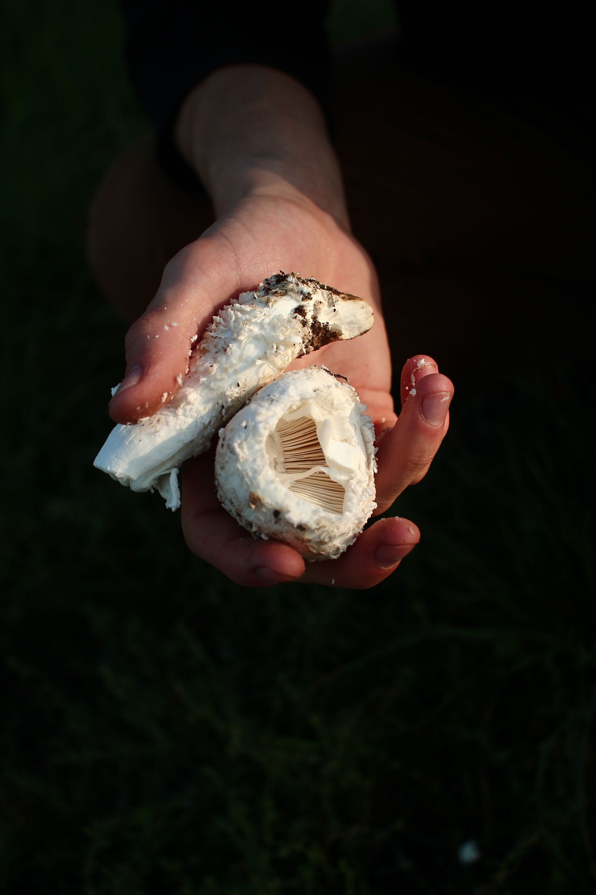

ABOUT · METHODS · LAW
The recorder, and how the recording is done
A species list is only as good as the method behind it. This page sets out both: who is doing the work, and the standards the work is held to.
Dr Helen Marlowe
I came to fungi sideways, through botany: a degree spent keying out plants, then a doctorate on the fungi of veteran trees, then twenty years of autumns spent mostly on my knees in beech litter. The doctorate taught me the bench work; the county recording scheme taught me the rest — that a record is a promise somebody else will build on, and it had better be true.
Spore Network is the practice that grew out of that recording. Estates kept asking the question recorders ask for free — what is actually growing here, and does it change what we should do? — and it turned out to be a professional question, worth a professional answer: surveyed properly, keyed properly, written down properly.
I still record for the county in my own time, and I still leave the best specimen of the day standing. Some habits are method, not sentiment: tomorrow's survey needs it there.

- DEGREES
- BSc Botany; PhD in fungal ecology — the fungi of veteran trees
- RECORDING
- County fungus recorder (voluntary), Herefordshire; recording since 2004
- MEMBER
- British Mycological Society; local fungus recording group
- PRACTICE
- 96 commissioned surveys since 2016 — estates, orchards, councils, trusts
- VOUCHERS
- Notable specimens dried and deposited with a reference fungarium
- BASED
- Ross-on-Wye, Herefordshire; surveys across Britain
METHODS
Four instruments, used in that order
None of this is exotic. The discipline is in refusing to skip a step because the photograph looked convincing.
M1Transects & plots
Sites are walked on planned lines so coverage can be stated, not implied. Every record carries substrate, host tree and position — a fungus without its context is half a record, and a second visit in different weather is standard on larger sites, because fruiting is weather-led.
M2Vouchers
Where the law and the landowner allow, notable and difficult finds are collected as voucher specimens: photographed in situ first, then dried, labelled and kept. A name that cannot be re-examined is an opinion; a voucher makes it evidence.
M3Microscopy
Spore prints are taken as routine, and spores, cystidia and hyphae are measured under the microscope for the genera that demand it — Russula, Inocybe, the small brown majority. Some species are simply not nameable in the field, and the report says so rather than guessing.
M4DNA barcoding
For the specimens that stay ambiguous — or where the answer changes a decision, as with a protected species — a small sample is sequenced (ITS region, the standard fungal barcode) and matched against reference databases. It is charged at cost and used where it changes the answer, not as decoration.
SAFETY & LAW
The rules the practice works under
Protected species are left standing
A small number of British fungi, lion's mane among them, are protected under Schedule 8 of the Wildlife and Countryside Act 1981: picking them is an offence. On survey they are photographed in situ, mapped, and reported — and the client's plans are advised around them, as in Case 01. Rarity alone earns the same care even where the law is silent.
No survey without permission
Every engagement starts with the landowner's written permission, including what may be collected as vouchers and what must not be. Records from land surveyed without permission are worthless to the national database and worse than worthless to the client.
Never eat on a photograph
No identification given on a survey, on a course, or anywhere on this website is a recommendation to eat anything. Edibility is a separate determination, made specimen in hand by key and print, and this practice does not make it for other people's tables. Several register entries are toxic; two of them have edible lookalikes. That is the whole argument.
Recording standards
All records are submitted to the county recorder for the Fungal Records Database of Britain and Ireland (FRDBI); nomenclature follows the British Mycological Society's checklist and Index Fungorum. Casual records between surveys go through iRecord. A survey that never reaches the database helped one client; a recorded one helps every wood after it.
Engagement terms, in plain terms
- Booking: autumn surveys are usually booked six to ten weeks ahead; the mid-October peak goes first.
- Deliverables: written report, full species list and notable-find map within 15 working days of the final visit.
- Weather: fruiting is weather-led. A survey in a dry spell is still a survey — the report states the conditions and what they mean, and a return visit is priced honestly if one is needed.
- Fees: as printed on the Register page; 30% deposit for multi-day engagements, balance on delivery of the report.
- Cancellation: postponement for weather is free once; cancellation inside a fortnight of a booked autumn date is charged at the deposit.
- Limits: a fungal survey reports what fruited and what the evidence supports. Absence from a list is not proof of absence from the wood — the report says that too.
Ask about a site
The enquiry form takes two minutes. The reply comes within three working days.